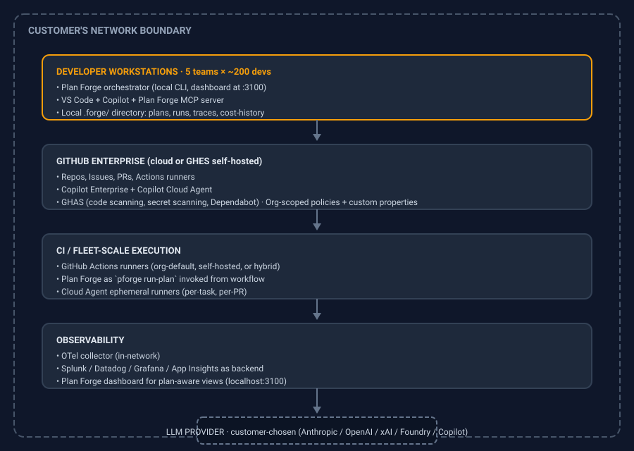

Enterprise Reference Architecture
One canonical architecture for a 5-team / 1000-developer fleet, plus the Microsoft Foundry composition variant for Azure-tenant deployments.
Audience: Platform architects and security engineers planning a multi-team Plan Forge deployment.
Scope: Generic enterprise architecture (Pattern A) and the Microsoft Foundry composition variant (Pattern B). Plus three network/isolation patterns including the air-gapped option that's a structural differentiator.
Design principles
Three constraints shape every architecture below:
- Local-first control plane. The Plan Forge orchestrator runs on the developer's box or a CI runner. There is no Plan Forge SaaS service. Source code does not leave the customer's network unless the customer chooses to call a hosted LLM.
- GitHub-native by design. Plan Forge consumes GitHub Issues, Copilot Cloud Agent, Actions, AGENTS.md, MCP, and the github-mcp-server as its substrate. Reinforces a GitHub Enterprise + Copilot Enterprise consolidation rather than competing with it.
- Open standards throughout. AGENTS.md (Linux Foundation), MCP (Linux Foundation), Agent Skills (Apache 2.0, Anthropic-maintained), OpenTelemetry
gen_ai.*semantic conventions. No proprietary file formats.
Reference architecture A — Generic enterprise (5 teams, 1000 developers)

Component responsibilities
| Component | Owns | Does not own |
|---|---|---|
| Developer workstation | Local plan execution, IDE-time orchestration, the dashboard, all .forge/ artifacts | Multi-team aggregation, long-running compute |
| GitHub Enterprise | Source of truth for repos, issues, PRs. Hosts Copilot Cloud Agent runs. Runs Actions workflows | Plan-level orchestration. Quality / eval / drift detection |
| Actions runners | Long-running plan execution, scheduled pforge run-plan jobs, fleet-scale dispatch | Interactive developer-loop workflows |
| OTel collector + backend | All trace, metric, and log aggregation across teams | Real-time agent control |
| LLM provider | Inference for worker LLM calls | Plan state, scope enforcement, gate validation |
Data flow
- Developer (or CI) starts a plan run.
- Plan Forge orchestrator reads the plan file, builds the slice DAG, dispatches each slice to the configured worker (Copilot Cloud Agent for GitHub-native runs, Claude Code / Codex CLI for direct runs, etc.).
- Worker consumes AGENTS.md + plan slice context + MCP tools. Calls the configured LLM provider for completions.
- Plan Forge runs the slice's validation gate. On pass, advances. On fail, retries with reflexion or escalates per plan policy.
- Cost, trace, and event data is appended to
.forge/runs/<id>/locally and emitted to the OTel collector for fleet aggregation. - PR is opened (Cloud Agent path) or commit is staged (direct path). Plan-aware diff (
pforge diff) checks scope-contract adherence before merge.
Reference architecture B — Microsoft Foundry variant
For customers running on Microsoft Foundry (Azure OpenAI, Foundry Agent Service, Foundry Toolboxes), Plan Forge composes as the SDLC orchestrator layer above Foundry's model gateway and agent runtime.

What sits where
- Plan Forge above Foundry: Plan Forge is the SDLC orchestrator (specify, plan, harden, execute, validate, ship). Foundry is the model gateway and production agent runtime. Plan Forge is not inside Foundry, not beside Foundry as a peer agent product, but above Foundry as the higher-altitude orchestration layer.
- Foundry as model provider: Plan Forge talks to AOAI via the OpenAI-compatible endpoint
https://{resource}.openai.azure.com/openai/v1/. Auth via Entra ID (recommended), API key, or managed identity. Customer configures deployment names, not model families. - Foundry Toolbox as shared MCP surface: Customer's curated, governed, audited tool surface, exposed once via Foundry Toolbox, consumed by Plan Forge in worker sessions and by Foundry agents in production. Single source of truth for org tools.
- App Insights as OTel sink: Plan Forge emits OTel traces (per the
gen_ai.*spec). Pointed at the Foundry-attached Application Insights resource, Plan Forge runs show up in the same dashboards as Foundry agent runs. - Plan Forge generates code that deploys to Foundry: A Plan Forge plan can ship a feature that is a Foundry agent.
deploy.instructions.mdand the skill system include/staging-deployand similar skills that target Foundry deployment paths.
What does not compose
- Plan Forge workers do not run as Foundry hosted agents. Different lifetimes, different IO models. Plan Forge workers need filesystem/git/terminal; Foundry hosted agents are containerized with VM-isolated sandboxes per session.
- Plan Forge does not register itself as a Foundry "fleet view" entity. Integration is one-way (Plan Forge writes to App Insights); the single pane of glass for Plan Forge runs is the Plan Forge dashboard.
Auth flow (Entra recommended)
from azure.identity import DefaultAzureCredential, get_bearer_token_provider
token_provider = get_bearer_token_provider(
DefaultAzureCredential(), "https://ai.azure.com/.default"
)
client = OpenAI(
base_url="https://YOUR-RESOURCE.openai.azure.com/openai/v1/",
api_key=token_provider,
)Required role assignment on the Foundry resource: Cognitive Services OpenAI User or Contributor.
Friction to design around
- Deployment-name vs model-name: Customer says "I'm using gpt-5.4-mini"; Plan Forge needs the deployment name (e.g.,
eastus-prod-mini). - AOAI quota differs from OpenAI: Fixed TPM quotas per region per model, plus PTU for provisioned. A slice estimating 150K tokens against a 100K TPM deployment will throttle mid-run. Plan ahead.
- Government cloud: Azure Gov has a reduced model catalog (
gpt-5.1,gpt-4.1family,o3-mini,gpt-4o). Use thepower-govquorum preset (or graceful fallback) when targeting Azure Government.
Network and isolation patterns
Pattern 1: Fully cloud-LLM (typical SaaS company)
- LLM calls go to public Anthropic / OpenAI / GitHub Copilot endpoints
- Plan Forge runs locally, traces go to cloud-hosted observability
- Lowest cost, fastest setup, weakest isolation
- Right for: most non-regulated companies, internal tooling, dev productivity
Pattern 2: Hybrid (Microsoft-shop typical)
- LLM calls go to Azure OpenAI in customer's tenant via private endpoint
- Plan Forge runs locally and in customer's Azure DevOps / GitHub Actions
- Traces to App Insights in same Azure subscription
- Right for: regulated SaaS, fintech, healthtech with Microsoft preference
Pattern 3: Air-gapped (defense, sovereign cloud, regulated)
- LLM calls go to on-prem inference (Foundry Local powered by Azure Local, Ollama, vLLM, or similar)
- Plan Forge runs entirely in-network; no calls leave the boundary
- OTel collector + backend in-network
- GitHub Enterprise Server (GHES) instead of cloud
- Right for: defense, FedRAMP High, IL5/IL6, sovereign cloud customers
Plan Forge is structurally compatible with all three. Pattern 3 is the differentiator, Cursor cannot offer this (control plane in AWS), Sourcegraph Amp explicitly cannot (no self-host, no BYOK), GitHub Copilot Cloud Agent runs on GitHub-hosted infrastructure. For air-gapped requirements, Plan Forge is structurally the only viable option in the comparison set.
Capacity planning
Per-team sizing (typical)
For a team of ~50 developers running ~3 plans/day per developer:
| Resource | Estimate |
|---|---|
| Plan Forge orchestrator processes | One per active developer, low CPU/memory (Node.js process, dashboard at :3100) |
| GitHub Actions minutes (CCA-dispatched plans) | ~15K min/month (varies wildly by plan complexity) |
| LLM tokens (mixed-mode quorum) | ~50M input + 10M output per team-month at moderate use |
Storage (.forge/runs/ retention) | ~5GB / team / quarter at typical detail |
| OTel trace volume | ~100K spans / team / day |
Org-level governance
- Custom properties on repos to scope which Plan Forge plans are allowed
- Org runner policies to control which Cloud Agent runners are available
- Branch protection rules to require Plan Forge gate-passed status before merge
- Cost budgets in
.forge.jsonper repo or per team
Failure modes and mitigations
| Failure | Detection | Mitigation |
|---|---|---|
| LLM provider outage | OTel error rate spike on gen_ai.* spans | Plan Forge supports multi-provider routing in .forge.json. Failover order configurable per slice |
| AOAI quota exhausted mid-slice | Worker error, gate failure | Preflight quota check (planned), slice retry with backoff, cross-region failover via deployment alias |
| GitHub Actions runner exhaustion | Workflow queue depth, Cloud Agent session pending | Self-hosted runner pool, prioritize critical plans via [P] tag and runner labels |
| Plan drift (PR diverges from approved plan) | pforge diff post-execution | Pre-merge gate fails; reviewer-gate agent flags; review thread opened via forge_review_add |
| Cost runaway (slice loops or model misroutes) | forge_cost_report anomaly, dashboard cost-tile alert | Per-slice workerTimeoutMs cap, forge_alert_triage priority queue, in-loop stuck detector (planned) |
Reference deployment timeline
For an enterprise rolling out across 5 teams in 90 days:
| Week | Milestone |
|---|---|
| 0 | Stakeholder alignment, pick LLM provider strategy, identify pilot team |
| 1–2 | Pilot team installs Plan Forge, runs first plan against a known-easy feature, baseline cost + cycle time |
| 3–4 | Pilot team runs 5+ plans, refines instruction files, captures lessons |
| 5–6 | Add team 2 + team 3 in parallel; first multi-team observability dashboards |
| 7–8 | Add teams 4 + 5; introduce shared MCP server (Foundry Toolbox or in-house equivalent) |
| 9–10 | Org-wide rollout patterns formalized; cost guardrails; quality KPIs reported up |
| 11–12 | First quarterly review; eval data informs next-quarter planning |
See Appendix M — Fleet Operator Playbook for week-by-week specifics.